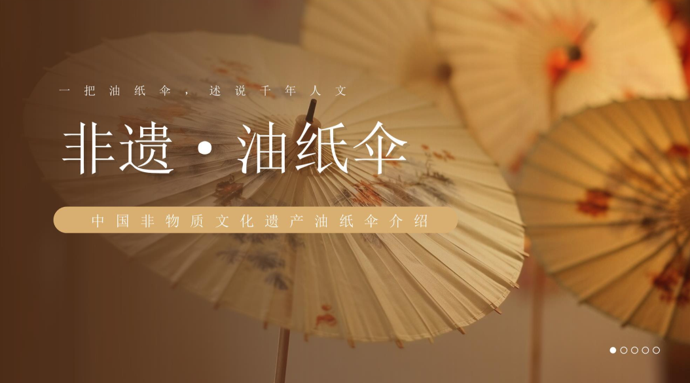
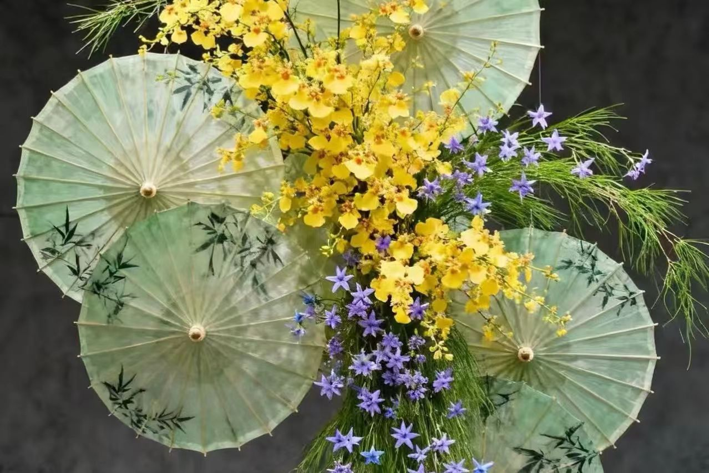

泸州油纸伞
泸州油纸伞
泸州油纸伞
泸州油纸伞

四百年巴蜀匠心 · 国家级非物质文化遗产
上百道古法工序 · 纯手工匠心打造
巴蜀文化的璀璨明珠 · 百年技艺传承

千年非遗文化 · 锦绣中华之美
泸州油纸伞是四川省泸州市独具特色的传统民间手工艺，起源于明末清初，传承至今已有四百余年历史，是我国西南地区保存最完整、工序最繁琐的传统制伞技艺之一。2008年，泸州油纸伞制作技艺成功入选第二批国家级非物质文化遗产代表性项目名录，成为巴蜀非遗文化的标志性符号。
该油纸伞摒弃工业化生产模式，全程依托手工技艺制作，选用川南优质慈竹作为伞骨原料，搭配韧性极强的特制皮纸，反复涂刷天然桐油，经过上百道精细工序打磨成型。成品伞体坚韧耐磨、防水防晒、透气轻便，既保留了传统雨具的实用价值，又具备极高的艺术观赏与收藏价值。
历经数代匠人传承革新，泸州油纸伞不再局限于日常使用，融合了山水、花鸟、民俗、戏曲等中式手绘纹样，广泛应用于汉服配饰、舞台表演、家居装饰、传统婚嫁等场景，承载着团圆美满、遮福避祸的美好民俗寓意，是流淌在巴蜀大地的匠心文脉。
🌂 文化价值：泸州油纸伞被誉为“中国民间伞艺的活化石”，是巴蜀民俗文化的重要载体，广泛用于婚庆、祭祀、戏曲表演等传统场景。
🌂 工艺特色：纯手工制作，不含金属配件，伞骨采用榫卯结构，天然桐油防水，可晴雨两用，兼具实用性与艺术性。
🌂 传承意义：如今油纸伞已成为非遗文创代表，走向国内外舞台，让百年传统工艺在新时代焕发新生。
✨ 补充知识：泸州油纸伞以“纯手工、无金属、可防雨、能收藏”为特色，是中国传统手工艺的杰出代表，深受国内外非遗爱好者喜爱。
汇集多款经典、文创、手绘主题油纸伞作品，欣赏传统工艺的美学魅力。
记录非遗传承人的坚守与创新，聆听四百年技艺的传承心声。
拆解油纸伞全套制作工序，零基础了解古法手工技艺精髓。